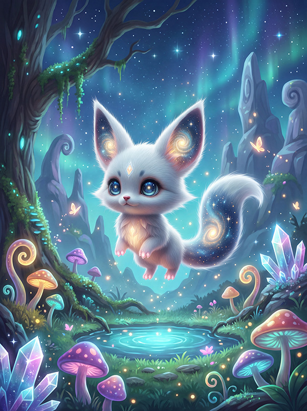
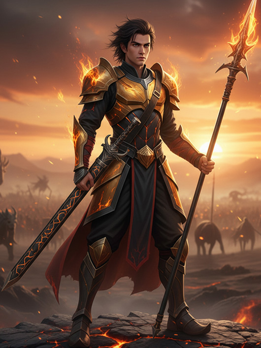

它以星轨为印记，用温柔，指引我穿行在神谕与代码的战场。
物种解读
基因记忆的伴侣
雪里霜源自上古异兽孟极的基因样本，其雪白的皮毛中流淌着微弱的星辰能量。它并非普通的宠物，而是主角姜炎洺在觉醒之路上最亲密的伙伴。雪里霜能够感知并“具现化”周围环境的数字星轨和时间回响，这使得它能够提前预警危险，并帮助姜炎洺在战斗和抉择中，稳定其混乱的“时间之眼”能力。


驯化混沌的温柔
姜炎洺在掌握“炎帝之火”与“时间回溯”能力的过程中，常因接收到过多维度信息而陷入情绪崩溃。正是雪里霜——这个看似娇小但体内蕴含着宇宙星辰的小家伙——用它的温柔和独特的治愈光晕，在关键时刻稳定了姜炎洺的精神链接。它不负责战斗，而是负责情感计算和神经安定。它存在的本身，就是对姜炎洺不断在“创造与毁灭间抉择”的旅程，最坚实且最温暖的锚点。